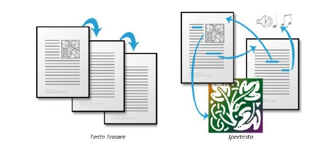

| Un ipertesto è un insieme di documenti messi in relazione tra loro per mezzo di parole chiave. Può essere visto come una rete; i documenti ne costituiscono i nodi. La caratteristica principale di un ipertesto è che la lettura può svolgersi in maniera non lineare: qualsiasi documento della rete può essere "il successivo", in base alla scelta del lettore di quale parola chiave usare come collegamento. È possibile, infatti, leggere all'interno di un ipertesto tutti i documenti collegati alla relativa parola chiave marcata. La scelta di una parola chiave diversa porta all'apertura di un documento diverso: all'interno dell'ipertesto sono possibili praticamente infiniti percorsi di lettura. | |
|  | L'ipertestualità è la caratteristica per cui un testo non è lineare e sequenziale, ma è costituito da parti (lessie o nodi), da ciascuna delle quali è possibile passare ad un'altra attraverso links rappresentati da segni convenzionali nel testo stesso (parole chiave, "bottoni" su cui si clicca). Un ipertesto offre un messaggio lineare solo finché si resta all'interno di un nodo. Il testo nel suo insieme è costituito da una rete multilineare in cui il fruitore può decidere liberamente quale percorso compiere passando da un nodo all'altro |
| Ci sono diversi tipi di link ipertestuali: Punto di vista:I link permettono il passaggio da un punto di vista a un altro all'interno del racconto. Cambiando la soggettiva può cambiare anche il soggetto narrante, includendo tra questi anche il narratore onniscente. Accessori:I link permettono di raggiungere delle parti testuali contenenti informazioni accessorie esterne al normale flusso del racconto (descrizioni, digressioni, note ecc.), rendendo più completa l'opera rispetto alla storia principale. Intrecci: I link permettono la navigazione tra più storie che si svolgono parallelamente nel tempo e che si incroceranno o che si sono incrociate, o che comunque saranno tra di loro legate in qualche punto. Le unità testuali trattano di una singola storia o di un insieme di storie, e nel secondo caso ha la funzione di un incrocio. Accumulazione: I nodi rappresentano dei brevi momenti di una storia, la navigazione permette di costruire a poco a poco una visione generale della storia e arrivare per piccoli passi "casuali" al senso della storia. Questa avrà quindi una forma non definibile e sarà piuttosto un insieme di frammenti separati. Salti nel tempo: I nodi rappresentano dei brevi momenti di una storia, la navigazione permette di costruire a poco a poco una visione generale della storia e arrivare per piccoli passi "casuali" al senso della storia. Questa avrà quindi una forma non definibile e sarà piuttosto un insieme di frammenti separati. Possibilità: I link rappresentano delle scelte che il lettore può effettuare all'interno della storia. Il lettore può prendere delle decisioni e il racconto svilupperà ciò che ha deciso. Tessere: Le unità testuali sono delle piccole porzioni di storia che assumono un determinato senso nel momento in cui sono inserite in un contesto, e a seconda dei contesti assumono significati differenti. La navigazione tramite link costruisce il contesto all'interno del quale le porzioni di testo assumono il proprio significato. L'analogia è con le tessere di un mosaico che assumono, a seconda della posizione nel contesto e delle tessere contigue, significati differenti. |